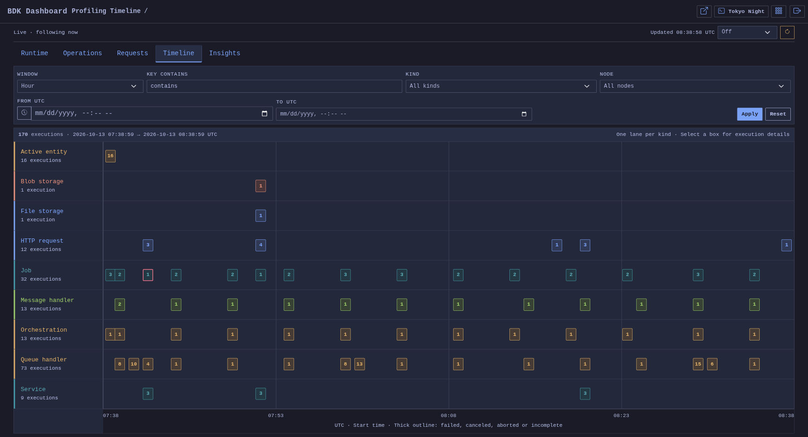
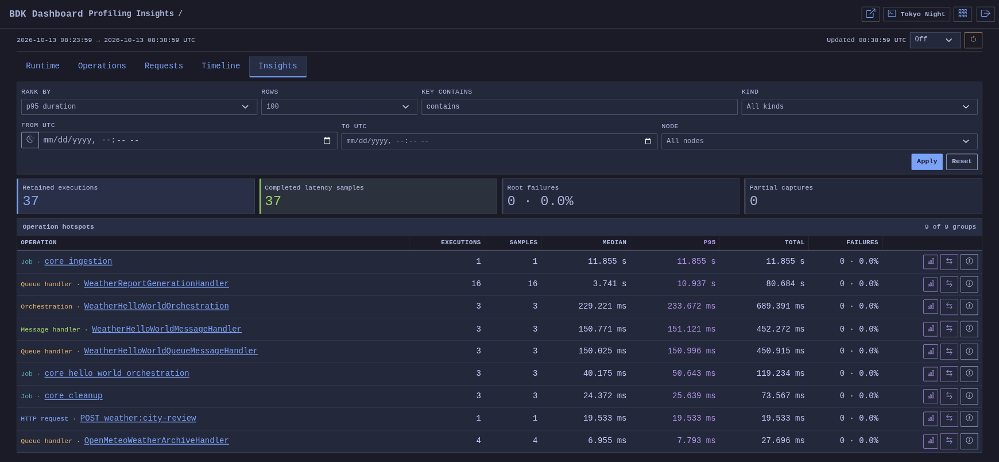

Profiling¶
Investigate process behavior with Runtime snapshots and application bottlenecks with independent Operation segments.
- Profiling
- Overview
- Challenges
- Solution
- Key Features
- Architecture
- Use Cases
- Basic Usage
- Operation and Request setup
- Local development setup
- Dashboard
- MCP diagnostics
- Console commands
- Programmatic usage
- Durable and multi-node registration
- Session and node semantics
- Deterministic evaluation
- Export boundary
- Security and operational guidance
- Migration from the unused earlier API
- Related features
Overview¶
Profiling is one opt-in development feature with independent Runtime and Operation capabilities. Runtime Profiling collects bounded CPU, memory, allocation and GC snapshots. Operation Profiling records one business execution and aggregates its timed segments. Request Profiling adapts the same operation recorder to HTTP; services, Blazor interactions, jobs, pipelines and orchestration slices use it without HTTP or an active Runtime session.
All recorded timestamps use UTC. Elapsed time uses a monotonic clock. Dashboard JSON endpoints serve dashboard pages; they are not a supported API for external clients. Business response payloads and request bodies are not stored.
Challenges¶
A slow operation can spend time loading data, transforming it, or running independent feature steps. Process-wide counters alone cannot identify that split. Instrumentation must remain bounded and must not put persistence on the business execution path.
Solution¶
The recorder captures bounded in-memory state, freezes an immutable completion record and enqueues it without waiting. One periodic worker persists batches through the selected provider. Read-only query services build dashboard views from retained data without flushing the queue. Runtime continues to use its separate Broadcast-controlled lifecycle and collector.
Key Features¶
- Independent Runtime sampling, general Operation timings and automatic HTTP capture.
- Repeated, nested and parallel segments aggregated by complete case-insensitive key paths.
- Typed dimensions, measurements, safe outcome/failure summaries and explicit partial coverage.
- All-request, probability and token-budget HTTP sampling strategies.
- Memory or Entity Framework provider selection, bounded retention and fenced all/range clearing.
- Runtime, Operations, Requests, Timeline and Insights views with shared authorization and UTC.
- Bounded time/process correlation, without assigning process resource totals to individual operations.
- Optional feature behaviors that remain usable when Profiling registration is omitted.
Architecture¶
IOperationProfiler owns synchronous execution-local capture. OperationProfilingCompletionQueue and OperationProfilingWriterService own nonblocking completion and periodic persistence. IProfilingStorageProvider exposes independent Runtime/Operation facets and maintenance. IOperationProfilingQueryService owns bounded reads, analysis and Runtime overlays. Runtime control, probes, collectors, measurements, archive and evaluation APIs use the RuntimeProfiling names and retain their own ownership.
flowchart LR
Business[HTTP / service / feature behavior] --> Recorder[Operation recorder]
Recorder --> Queue[Bounded completion queue]
Queue --> Writer[Periodic batch writer]
Writer --> Provider[Profiling storage provider]
Broadcast[Runtime Broadcast control] --> Collector[Runtime collector]
Collector --> Provider
Provider --> Queries[DI query services]
Queries --> Dashboard[Runtime / Operations / Requests / Timeline / Insights views]Use Cases¶
- Identify which segment keys become slower under concurrent requests.
- Compare retained timing distributions by key, kind and typed dimensions.
- Investigate repeated SQL, cache, transformation or service work without recording a dependency trace.
- Open a diagnostics ID from a response header and inspect its retained operation.
- Overlay process snapshots around an operation while keeping sampling gaps visible.
- Reproduce a Runtime workload, compare snapshots and retain a terminal Runtime archive.
Basic Usage¶
The following development-only endpoint starts a bounded in-memory session, records a marker, waits for samples, and stops the session. Each result is checked before its value is used, and the response reports the session key and final state.
using BridgingIT.DevKit.Common;
var builder = WebApplication.CreateBuilder(args);
builder.Services.AddProfiling(options => options
.Enabled(builder.Environment.IsDevelopment()))
.WithRuntimeProfiling(options => options
.SamplingInterval(TimeSpan.FromSeconds(1))
.Duration(TimeSpan.FromSeconds(10)));
var app = builder.Build();
if (app.Environment.IsDevelopment())
{
app.MapPost("/dev/profiling/sample", async (
IRuntimeProfilingControlService profiling,
CancellationToken cancellationToken) =>
{
var started = await profiling.StartAsync(
new RuntimeProfilingStartRequest("sample workload"),
cancellationToken);
if (started.IsFailure)
{
return Results.Problem(string.Join(
"; ",
started.Errors.Select(error => error.Message)));
}
var marked = await profiling.AddMarkerAsync(
"workload started",
cancellationToken);
if (marked.IsFailure)
{
await profiling.StopAsync(CancellationToken.None);
return Results.Problem(string.Join(
"; ",
marked.Errors.Select(error => error.Message)));
}
await Task.Delay(TimeSpan.FromSeconds(3), cancellationToken);
var stopped = await profiling.StopAsync(cancellationToken);
if (stopped.IsFailure)
{
return Results.Problem(string.Join(
"; ",
stopped.Errors.Select(error => error.Message)));
}
return Results.Ok(new
{
Session = stopped.Value.Session.Identity.Key,
stopped.Value.Session.State,
ParticipatingNodes = stopped.Value.NodeOutcomes.Count
});
});
}
app.Run();
Calling POST /dev/profiling/sample returns the readable session key and a terminal state. The session remains available in the in-memory store until retention removes it or the process exits.
Operation and Request setup¶
Enable each capture capability explicitly. The overarching feature uses the in-memory provider by default:
builder.Services.AddProfiling(options => options.Enabled(builder.Environment.IsDevelopment()))
.WithRuntimeProfiling(options => options.SamplingInterval(TimeSpan.FromSeconds(1)))
.WithOperationProfiling(options => options.FlushInterval(TimeSpan.FromSeconds(1)).BatchSize(512))
.WithRequestProfiling(options => options.StripPathPrefix("/api"));
builder.Services.AddDashboard(options => options.Enabled(builder.Environment.IsDevelopment()));
WithRequestProfiling fails setup validation if Operations was not explicitly enabled. Omit Runtime to use Operations alone. Disable Requests to stop automatic HTTP capture while retaining manually started operations. AddProfiling without an enabled operation capability supplies an inactive facade; omitting AddProfiling supplies no profiling dependencies. Feature behaviors resolve their optional dependency gracefully.
Place the outer request observer before error handling and the exception observer immediately inside the handler. Keep routing, CORS, security and response processing inside the observation boundary:
app.UseRequestProfiling();
app.UseExceptionHandler(); // use the host's configured error handler
app.UseRequestProfilingExceptionObserver();
app.UseRouting();
app.UseCors();
app.UseAuthentication();
app.UseAuthorization();
app.MapEndpoints();
The default operation key is the matched route template, including any mount prefix. For example, /api/orders/42 and /api/orders/81 both belong to /api/orders/{id}, or /orders/{id} when stripping /api. The actual path and query arguments remain in each request's metadata. Requests without a matched template fall back to their incoming path. A controller's explicit SetKey(...) takes precedence; automatic prefix stripping only applies to defaults. Prefix stripping respects path-segment boundaries.
Request Profiling defaults to AllRequests sampling and the blacklist /_bdk/**, /health*, /swagger/**, /scalar/**, /openapi/**, /.well-known*, /.well-known/**. Blacklist(...) replaces that list; Blacklist() clears it. Blacklist patterns use * within a path segment and ** across segments; they match the normalized request path before key-prefix stripping. /health* matches /healthz but not /health/live. The well-known patterns also exclude discovery endpoints such as /.well-known/openid-configuration.
Blacklist exclusions and HTTP sampling skips affect only the automatic HTTP recording. Business behaviors remain eligible: JoinOrStartAsync adds a segment when an operation exists and starts its own operation otherwise. Explicit Suppress() scopes still disable nested recording. Profiling queries, writers, cleanup and maintenance use explicit suppression to avoid recording their own instrumentation. Sampling is decided once at middleware entry using the incoming path; route-template enrichment after routing does not resample the request.
Server-side RazorSlice pages execute inside the incoming HTTP request that renders the page. Their content refreshes also arrive through HTTP. Although the default blacklist excludes dashboard HTTP requests, their Requester queries and storage behaviors can create independent operations without a whitelist. This includes queries run by automatic dashboard refreshes. Requester.SendAsync() itself makes no HTTP call.
To record selected dashboard HTTP requests as well, whitelist their paths. Matching entries override the blacklist, and HTTP sampling still applies:
profiling.WithRequestProfiling(requests => requests
.Whitelist("/_bdk/dashboard/app/core/**"));
The HTTP whitelist is empty by default. Use the configured dashboard prefix and pass all desired patterns together; Whitelist(...) replaces the list and Whitelist() clears it. Whitelisting does not force a sampled-out HTTP request to be recorded. Business operation capture remains independent of both HTTP lists.
WithInMemoryProvider() is optional. Use WithEntityFrameworkProvider<TContext>() or WithProvider<TProvider>() to replace the shared default provider.
Selected eligible requests receive X-Request-Profiling-Id. This ID identifies the occurrence, not a durable-storage receipt: queue limits, loss, pending flush, expiry or clearing can make exact lookup unavailable. It is distinct from the application correlation ID and ASP.NET's transport request ID. Application correlation comes from the request correlation middleware, including when it runs inside the profiling observer. The transport ID remains separate metadata. Cached responses do not replay stale profiling IDs. Response bytes distinguish observed, partial/unavailable and declared sizes. Body observation does not read, buffer, or retain payload contents.
HTTP details include the original path and route template, scheme, host, protocol, content types and query arguments. Query capture defaults to 4,096 characters, preserves argument order and repeated names, and redacts common credential parameters case-insensitively. The details view marks truncated queries. Query arguments never change the operation key. Configure capture with .WithRequestProfiling(requests => requests.QueryString(enabled: false)), or set a limit and explicit sensitive-name list through QueryString(true, maximumLength: 2048, redactedParameters: ["token", "password"]). An explicit list replaces the default redaction names; bodies and authentication headers remain excluded.
Enrichment and segments¶
Inject IOperationProfiler into a controller, minimal API or service. Middleware owns the HTTP operation; the handler enriches that owner:
app.MapGet("/catalog", async (IOperationProfiler profiling, CancellationToken token) =>
{
profiling.SetKey("catalog:list");
profiling.SetDimension("category", "books");
profiling.SetDimension("batchSize", 20); // numeric, distinct from the string "20"
var result = await profiling.RunSegmentAsync("Query", (_, ct) => Task.FromResult(Result<int>.Success(20)),
token, value => OperationProfilingHelpers.ClassifyResult(value));
return Results.Ok(result.Value);
});
Outside HTTP, own a root explicitly or use the helper that preserves business results, exceptions and cancellation:
var count = await profiling.RunOperationAsync("catalog:refresh", OperationProfilingKind.Service,
async (operation, token) =>
{
operation.SetDimension("region", "west");
for (var index = 0; index < 3; index++)
{
using var load = operation.BeginSegment("Load");
await load.RunSegmentAsync("Transform", (_, ct) => Task.CompletedTask, token);
load.SetMeasurement("items", 10, "count", MeasurementAggregation.Sum);
load.Complete();
}
return 30;
}, cancellationToken);
Segments with the same complete path aggregate invocation counts, total/self durations, min/max, outcome buckets and compatible measurement reductions. Names compare ordinally without case: Load and load belong to the same group. Nested Load/Transform differs from top-level Transform. Invocation means use summed duration/count; invocation percentiles and chronological traces are unavailable. Parallel invocation totals can exceed root elapsed time. Exclusive wall-time bars represent top-level key buckets, Parallel overlap and Outside segments; they are percentages of monotonic root duration.
Explicitly complete manual scopes. Disposed-but-uncompleted, abandoned or clipped scopes keep incomplete/partial quality. Helpers observe delegate completion automatically. Safe error descriptors contain source/code/type and bounded policy-approved messages; raw stacks and result payloads are excluded. Recoverable observation faults discard inconsistent capture and preserve exactly-once business work. Process-fatal failures, invalid explicit setup and application expressions computing metadata are outside that guarantee.
Repository and Active Entity behaviors¶
Register these behaviors through the existing feature APIs:
services.AddProfiling(options => options.Enabled()).WithOperationProfiling();
services.AddInMemoryRepository<Product>()
.WithBehavior<RepositoryProfilingBehavior<Product>>();
services.AddActiveEntity(configuration => configuration.For<Customer, Guid>()
.UseInMemoryProvider()
.AddProfilingBehavior());
RepositoryProfilingBehavior<TEntity> covers all IGenericRepository<TEntity> read, write and bulk overloads. A call joins the current operation as a segment, or starts a Repository operation when called independently. Keys identify the entity type and operation, such as repository:Product:FindAll. The behavior records the awaited repository call. It does not enumerate returned sequences or capture entity values, IDs, predicates or query results.
ActiveEntityProfilingBehavior<TEntity> wraps each complete Active Entity operation through IActiveEntityOperationBehavior<TEntity>. Its boundary includes before hooks, provider work and after hooks. Keys include the operation name without Async, such as activeentity:Customer:Insert. Failed IResult values and exceptions close the recording even when an operation returns before its after hooks. Bulk convenience operations also contain the individual entity operations as nested segments. The wrapper does not inspect collections of business results. A failed child segment does not automatically change its caller's outcome.
Both behaviors accept an optional IOperationProfiler. They work when Profiling registration is omitted, honor disabled capture and suppression, and preserve business results, cancellation tokens and exceptions. Their bounded dimensions record the full entity type name and operation name. They use the shared completion queue and periodic writer; they do not access storage during business execution. A repository called inside an Active Entity provider contributes a nested segment to the same operation.
AddProfilingBehavior() prevents duplicate Active Entity profiling registration. The existing .WithBehavior<ActiveEntityProfilingBehavior<Customer>>() API is also available. Optional operation wrappers execute in registration order around the existing lifecycle hooks. The existing two-argument ActiveEntityContextScope.UseAsync remains available for custom callers; its default profiling name is UseContext. The cancellation-aware overload accepts an explicit operation name and otherwise uses the caller's member name.
Requester and Notifier behaviors¶
Register the profiling behaviors before other behaviors to measure their downstream work:
services.AddProfiling(options => options.Enabled()).WithOperationProfiling();
services.AddRequester()
.AddHandlers()
.WithBehavior(typeof(ProfilingRequestBehavior<,>));
services.AddNotifier()
.AddHandlers()
.WithBehavior(typeof(ProfilingNotificationBehavior<,>))
.WithBehavior(typeof(ProfilingNotificationHandlerBehavior<,>));
ProfilingRequestBehavior<TRequest,TResponse> measures one Requester pipeline, using requester:{request type name} and kind Requester. ProfilingNotificationBehavior<TRequest,TResponse> measures one dispatch with notifier:{notification type name} and kind Notifier. An independent invocation owns an operation. Within an existing operation, the invocation contributes a segment. These boundaries start when the behavior runs; handler resolution and dispatch setup remain outside their timing.
ProfilingNotificationHandlerBehavior<TRequest,TResponse> runs around each resolved handler. Its key is notifier:{notification type name}:handler:{handler type name}. Each handler contributes a child segment beneath the dispatch, grouped by its short type name. Full type names remain metadata; equal short names share a group. Repeated calls to the same complete path aggregate. Concurrent durations can overlap and exceed elapsed dispatch time. A sequential dispatch that stops on failure records only the handlers that ran.
In fire-and-forget mode, dispatch timing ends after scheduling. Each handler establishes an independent execution boundary and owns a NotifierHandler operation. Handler work can finish after dispatch or HTTP capture closes. Dispatch success confirms scheduling; it does not imply handler success. Independent worker boundaries clear inherited profiling context, including suppression. They still honor the enabled operation capability and capture limits.
All three behaviors accept an optional IOperationProfiler and classify IResult outcomes through the shared safe helper. They preserve business results, exceptions and cancellation, and perform no storage access. Metadata contains bounded full type names, without message contents, options, request IDs or result payloads. Normal joined execution honors caller suppression. Repeated registration of these behaviors through their respective builders is idempotent; other behavior ordering remains unchanged. Place profiling outside retry to measure the full policy, or inside retry to aggregate executed attempts.
Messaging and queue handler behaviors¶
services.AddProfiling(options => options.Enabled()).WithOperationProfiling();
services.AddMessaging().WithBehavior<MessageHandlerProfilingBehavior>();
services.AddQueueing().WithBehavior<QueueHandlerProfilingBehavior>();
MessageHandlerProfilingBehavior implements IMessageHandlerBehavior; QueueHandlerProfilingBehavior implements IQueueHandlerBehavior. Both accept optional IOperationProfiler. Typed and instance registration is idempotent; factory registrations retain the builder's ordinary behavior. Omitted or disabled Profiling leaves handler execution unchanged. The behaviors use the shared completion queue and periodic writer without accessing storage on the handler path.
Keys identify the runtime message and handler types: messaging:{message type name}:handler:{handler type name} and queueing:{message type name}:handler:{handler type name}. Independent roots use kinds MessageHandler and QueueHandler. Direct behavior calls join an active operation as segments and honor caller suppression. Repeated calls aggregate by complete segment path. Equal short type names share a key; full type names remain bounded dimensions.
Broker handler entry points use IProfilingExecutionBoundaryBehavior to establish a fresh profiling boundary before invoking the pipeline. Every consumer handler therefore owns an independent operation, even when a worker inherited a producer's operation or suppression. The caller's context is restored afterward. This applies to in-process and external transports, including EF workers that process individual stored subscriptions. Nested service, repository or manually timed work becomes segments of the consumer operation. Handler completion can occur after the producer's capture closes.
Timing starts when the profiling behavior runs, after subscription lookup, handler resolution and deserialization. It excludes publishing, queue residence, transport receipt, broker readiness checks, semaphore waiting before the pipeline and acknowledgement afterward. Register profiling before retry/timeout behaviors to include their downstream policy duration; register it inside retry to record each exposed attempt. A later transport redelivery starts another operation. A successfully returned handler is Completed; thrown exceptions are Failed. Only requested cancellation carrying the supplied handler token is Canceled. The existing broker still owns its completion, acknowledgement, retry and dead-letter rules. Profiling does not infer delivery guarantees or record handlers that never ran.
Bounded dimensions contain messaging.messageType, messaging.handlerType, queueing.messageType and queueing.handlerType.
Brokers copy the origin's application correlation ID into message properties before publishing or enqueueing. A valid explicit correlation ID in the message takes precedence. Consumers restore that ID in CorrelationId.Current for the handler, nested calls, and further publishes, then restore the worker's previous context. This applies without Profiling registration or an Activity listener. Job and orchestration executions establish their own correlation scopes.
Profiling accepts valid CLR strings and JSON strings restored from durable storage, up to 128 characters. Arbitrary property values are never stringified. Message bodies, business IDs, headers and result payloads are not retained. Metadata, scope and restoration faults preserve exactly-once business invocation and its original exception.
Storage behaviors¶
Storage behaviors remain profileable when their dashboard HTTP requests are blacklisted or sampled out. They need no path whitelist. Dashboard actions and reads, including refreshes, can produce storage operation records; use an explicit Suppress() scope around work that should not be recorded.
File, document and blob storage can join the current operation as timed segments or own independent operations. They use these keys and dimensions:
| Behavior | Kind and key | Dimensions |
|---|---|---|
ProfilingFileStorageBehavior |
FileStorage / filestorage:{operation} |
filestorage.location, filestorage.operation |
ProfilingDocumentStoreClientBehavior<T> |
DocumentStorage / documentstorage:{type name}:{operation} |
documentstorage.client, documentstorage.documentType, documentstorage.operation |
ProfilingBlobStoreClientBehavior |
BlobStorage / blobstorage:{operation} |
blobstorage.store, blobstorage.container, blobstorage.operation |
Logical locations, configured client names and containers describe storage resources. File paths, blob names and prefixes, document partition/row keys, continuation tokens and payloads are omitted. The key stays the same across resources, so dimension filters and comparisons can compare the same operation in different locations, clients or containers. Joined calls keep their metadata on their segment; standalone calls put it on the operation. Correlation comes from the caller's ambient application correlation scope.
services.AddProfiling(options => options.Enabled()).WithOperationProfiling();
services.AddFileStorage(factory => factory.RegisterProvider("reports", storage => storage
.UseInMemory("reports")
.WithMetrics()
.WithProfiling()));
services.AddDocumentStorage()
.WithProfilingBehavior<Report>()
.RegisterProvider<Report>(_ => new InMemoryDocumentStoreProvider(), name: "reports");
services.AddBlobStorage()
.WithProfilingBehavior()
.WithInMemoryClient("reports");
All 22 file-provider methods, 10 typed document-client methods and seven blob-client methods are covered, including paging, metadata updates and batches. File behaviors wrap in registration order: place WithProfiling() last to include other behaviors. Named document and blob clients apply the first registered behavior outermost: register Profiling first to include downstream cache, retry and timeout work. Direct document registration also supports builder.WithProfilingBehavior() on DocumentStoreBuilderContext<T>. Register each profiling behavior once.
These registrations resolve IOperationProfiler optionally and do not install Profiling themselves. Omitted, disabled and suppressed capture preserves storage execution. Failed Results and thrown exceptions are classified without retaining their messages. A document batch with failed items records PartialBatch failure while returning the original partial result. Storage profiling does not start Runtime sessions or write to the profiling provider on the storage call path.
Returned streams, lazy enumerables and metadata delegates remain caller/provider-owned. ReadFile, OpenWriteFile and blob download timings end when the storage method returns; later stream consumption or disposal is outside that timing. Profiling does not inspect, wrap, consume or dispose content streams.
Executing nodes and per-node analysis¶
Every operation stores the cached executing-process ProfilingNode: its GUID and readable key, hostname, display name, process ID, process-start UTC and application version. Consumer records describe the node that ran the handler; producer metadata never substitutes for it. Segments belong to their operation's node. Node GUIDs distinguish separate processes on one host and change after a restart; a display name is not a unique identity.
The Operations and Requests dashboards have a Node selector showing contributing node names. Node keys, IDs, hostnames and versions appear in tooltips. It filters that node's records, groups and distributions. Choices come from retained operations within the selection before applying the node filter, including nodes outside the visible page. Runtime navigation uses the same node identity plus UTC interval overlap. Shared EF storage can retain records from several nodes for these views. The default in-memory provider contains only the current process's history. Grouping still uses operation keys and explicitly selected dimensions; node selection is an exact filter, not an implicit grouping dimension.
Sampling, persistence and limits¶
All eligible requests are selected by default. Select a built-in strategy fluently, for example WithSampling(s => s.Probability(0.1)) or WithSampling(s => s.RateLimit(25, 50)); the last explicit strategy wins. Strategies are singleton and evaluated once at entry. Stored policy/probability labels describe selection, not the probability of durable retention. Sampled counts/percentiles are not extrapolated to all traffic.
| Operation default | Value |
|---|---|
| Active roots / charged bytes | 1,024 / 32 MiB |
| Root duration / record charge limit | 15 minutes / 64 KiB |
| Aggregate paths / live segments / depth | 128 / 256 / 32 |
| Queue records / charged bytes, including in-flight retries | 8,192 / 64 MiB |
| Flush interval / batch records / batch charge | 1 second / 512 / 4 MiB |
| Batch starts per cycle / cycle time budget | 8 / 250 ms |
| Attempt deadline / shutdown drain | 5 seconds / 5 seconds |
| Memory retention | 10,000 operations / 128 MiB / 24 hours |
| EF retention | 100,000 operations / 7 days |
| Concurrent query views / deadline | 4, without waiting / 5 seconds |
| Page size / exact analysis / Runtime overlay | at most 500 / 10,000 roots / 2,000 snapshots |
Batch and retry work is independent of the caller's request token. Provider attempts are idempotent per writer/sequence and atomic per root. A timed-out attempt that ignores cancellation holds its writer slot until it returns; no overlapping write is launched. Health distinguishes local queue/in-flight/age, persistence failure/loss/unknown commits, administrative discards, retention removals and local sampling counters. Shared-provider counts cover retained shared history; live counters belong to the serving node. The next successful maintenance observation includes in-memory capacity evictions performed during append; these are retention removals, not failed incoming diagnostics, and do not consume that tick's deletion work budget. No universal throughput or overhead percentage is implied by the configured ceilings.
The capacity evidence compares omitted, disabled, root-only, nested, Trace-enabled and saturated capture for all four providers. The local raw evidence retains latency distributions; the versioned summary includes a tested explicit 10% sampling configuration. These are synthetic loopback measurements of the general operation core, with a collocated client and four bounded segment invocations; they do not measure production HTTP metadata, remote dependencies or a real logging sink. Use queue age, persisted rate, loss and polling freshness together when tuning a host; endpoint success alone does not establish diagnostic persistence capacity. AllRequests remains the default sampling strategy.
Operation dashboard and queries¶
Operations and Requests default to Recent and share Slow, Recent and By count modes, result choices 50/100/250/500, typed filters and full retained group counts. Requests always fixes kind to HttpRequest. Rows show the executing node and outcome/coverage; details show aggregated segment paths and safe metadata. Exact ID lookup ignores list windows/outcomes but retains authorization/provider scope. Each view remembers its filters, Tail setting, comparison selections and group expansions separately in localStorage. Explicit URL filters take precedence; Reset clears saved filters and restores Recent.
Initial rendering and content refresh call the same DI model builder/query facade. Dashboard JSON uses that facade too, without HTTP loopback, direct EF queries in Razor or queue flushing. Load more is centered below the list and appends the next page of recordings to existing groups or adds new groups, preserving filters, expansion and scroll. Changing Rows sets the size of the next older page or Tail batch without restarting the selection; date, node, key and other filters still apply when you select Apply. Tail is optional in Recent view: it checks for newly published recordings every two seconds, prepends them and updates retained counts without replacing loaded history. Changed groups move to the top. It drains every page of a burst before advancing its publication checkpoint, including delayed recordings with older or identical completion timestamps. Counts and group statistics still cover the complete retained selection. Older paging retains its original boundary while Tail advances independently. Tail keeps the initially resolved From UTC; Refresh resolves empty dates again. Tail pauses in hidden tabs and while filters are edited, cancels obsolete reads and retains displayed data after errors. Refresh replaces the list with the latest page. Clearing, retention, changed filters or an expired five-minute boundary require a fresh selection.
Operation query bounds are independently optional. An omitted To UTC resolves to the current time for each fresh query; a stored paging boundary keeps its original end. An omitted From UTC resolves to fifteen minutes before the resolved end, including when that end is historical. UTC and start-before-end validation still apply.
Query settings are configurable through ProfilingOptions.Queries. MaximumNodeChoices defaults to 200, accepts 1–10,000, and bounds node choices without reducing execution counts; the selector indicates when more nodes match. The exact-analysis selection bound applies to both root durations and per-operation segment distributions. EF operation-query commands inherit the configured query timeout, rounded up to at least one whole second; the shared query facade still enforces the precise elapsed deadline and caller cancellation.
Queries allow eight general dimension predicates and four grouping dimensions. Expanding a group uses at most four additional exact/missing group selectors while preserving the general filters. Exact analysis returns midpoint medians and nearest-rank p95/p99 from retained owner observations. Segment means remain invocation-weighted; distributions refer to per-operation aggregates and are not averages of percentiles.
Filter and compare dimensions¶
Open Dimensions on Operations or Requests to add operation conditions. Select or type a recorded name, choose Equal, Present, or Missing, then select a recorded typed value or enter one. Conditions must all match. Active conditions appear as removable chips. An empty string is a value, distinct from missing metadata. String values are case-sensitive; dimension names are case-insensitive. Numeric types remain distinct, and integer and UTC values retain their scalar precision.
Use workload dimensions such as status, attempt, cache state or item count for grouping and comparisons. Built-in orchestration instance/correlation IDs and job/pipeline execution IDs are excluded from dimension choices and saved grouping selections, including older profiles. Their legacy metadata remains readable in execution details. Application-defined business identifiers remain available as dimensions.
Choose Group by operation dimension to split each operation key and kind into value groups. Each group shows the retained count, median, p95, and partial captures. Operations without the selected dimension are excluded before paging, counts and timing analysis. Empty strings remain valid values. Advanced selectors can group by up to four dimensions; an operation must contain every selected dimension. Clear grouping to include operations without those dimensions, or use an explicit Missing condition to find them. The grouped list keeps complete counts when exact duration analysis exceeds its bound and asks you to narrow the selection.

Use a group's comparison action to set the baseline conditions. Choose another Recorded group of the same operation in the comparison dialog, or edit the conditions independently. Group conditions appear as removable chips. Dates, node, and application version remain independent on each side. This supports questions such as cache hits versus misses for the same workload, with segment timings showing where duration differs.
Execution details provide dimension actions to filter the list, group by an operation dimension, or use a condition for either comparison side. Segment conditions require a Segment filter path, including every parent. They never match a similarly named sibling or an operation dimension. Mixed and partial segment values stay visible; equality suggestions include only complete, uniform values. Segment discovery counts executions owning that path, not repeated invocations.
Discovery reads the selected retained data through IOperationProfilingQueryService.DiscoverDimensionsAsync, independently of the visible row limit. Names and values follow the selected key, kind, UTC range, node, and other conditions. Editing a dimension reveals alternatives to its own predicate. Suggestions show counts and support name and value searches. MaximumDimensionNames defaults to 32 and MaximumDimensionValues to 20 per name; both accept 1–512. Values are ranked by count, then exact type and scalar. Searches cover the bounded selection rather than only the returned suggestions. A selection above MaximumAnalysisRecords returns a limit error instead of misleading partial suggestions. Discovery shares admission, cancellation, and timeout limits with other dashboard queries and never flushes queued captures.
Prefer recurring categories such as cacheState, provider, or workloadSize for grouping. Keep exact identifiers in execution details, and record quantities as measurements when you need numerical aggregation. The dashboard remembers dimension conditions and grouping independently for Operations and Requests.
Runtime overlays require exact process identity and observed UTC interval overlap. They show actual collection windows, surrounding samples, sample-rate intervals and gaps. They do not imply ownership, interpolate missing samples or assign process CPU/memory/GC to the operation. Both views provide node/time navigation in the other direction.
Provider clearing and extension¶
Inject IProfilingStorageProvider to clear ProfilingDataSet.Runtime, Operations or All, optionally within a UTC interval through ProfilingClearRequest. Ranges are inclusive/exclusive. Set OperationSelection with DataSet = Operations to remove an exact operation key and kind within explicit UTC bounds and matching filters; paging and analysis limits do not limit deletion. Providers fence delayed writers and uncertain commits before deleting retained history; timeout/cancellation does not pretend a clear completed. Active Runtime sessions retain their control restrictions. The confirmed Clear all profiling data action in Runtime uses ProfilingDataSet.All, including Operations and HTTP Requests. A large clear may continue through bounded maintenance batches; the dashboard reports pending work. Work captured after the clear fence can appear again. Operations and Requests offer a dashboard-only group deletion action.
A custom IProfilingStorageProvider must supply the documented independent facets, capabilities, idempotency, retention and clear semantics. Use WithProvider<TProvider>(factory) for explicit selection. Runtime overlay support is optional through IRuntimeProfilingCorrelationStore; missing support produces an unavailable overlay instead of loading all history. Built-in EF uses application-owned scoped contexts and migrations, not a request's DbContext or startup DDL.
Local development setup¶
Start with the process-local in-memory provider when profiling one application process. Keep collection, the dashboard, and Console Commands restricted to Development.
builder.Services
.AddProfiling(options => options
.Enabled(builder.Environment.IsDevelopment()))
.WithRuntimeProfiling(options => options
.SamplingInterval(TimeSpan.FromSeconds(1))
.Duration(TimeSpan.FromSeconds(30)))
.AddConsoleCommands(builder.Environment.IsDevelopment());
builder.Services.AddDashboard(options => options.Enabled(builder.Environment.IsDevelopment()));
After building the application, map the registered endpoints as usual:
app.MapEndpoints();
AddProfiling registers shared services and uses InMemoryProfilingStorageProvider by default. It enables no capture capability implicitly. WithRuntimeProfiling adds Runtime collection and Broadcast control; WithOperationProfiling adds independent operation recording and the periodic writer. WithRequestProfiling requires explicitly enabled Operations and adds the HTTP adapter. The shared master flag gates both capabilities.
Runtime node metadata registration honors Broadcasting's database-readiness configuration through the optional IDatabaseReadyService. An Entity Framework Broadcasting registry selects its application's DbContext name automatically; no registry lookup occurs before that database is ready. A readiness fault or timeout skips metadata registration without failing the host. Without a readiness service, registration proceeds normally. Disabled Broadcasting skips this registration worker.
The global AddDashboard call discovers Profiling automatically. There is no Profiling-specific dashboard registration call: the navigation item appears when Profiling is enabled and stays hidden when it is disabled.
The built-in defaults are:
| Setting | Default |
|---|---|
| Sampling interval | 1 second |
| Minimum sampling interval | 500 milliseconds |
| Session duration | 30 seconds |
| Dashboard refresh | 5 seconds |
| Maximum retained unpinned terminal sessions | 20 |
| Maximum unpinned terminal session age | 7 days |
| Participation deadline | 1 second |
| Finalization grace period | 1 second |
Every session has an automatic maximum duration. A manual stop ends collection early without changing that original logical end time.
Dashboard¶
The Profiling landing page is /_bdk/dashboard/profiling under the default dashboard prefix. It chooses Runtime when Runtime capture is enabled, otherwise Operations when Operation capture is enabled. The three views are /profiling/runtime, /profiling/operations, and /profiling/requests; retained history remains available when a subfeature stops capturing.
The screenshots show recorded sample activity. Select an image to open it at full size. Their timings and resource values illustrate the views rather than benchmark application performance.
Runtime snapshots and analysis¶
A selected Runtime session and node can be shared with readable eight-character keys:
/_bdk/dashboard/profiling/runtime?session=a1b2c3d4&node=e5f6g7h8
The dashboard groups the workflow into four tabs:
| Tab | Use it to |
|---|---|
| Overview | Inspect the latest or selected snapshot, follow memory and GC-pressure charts, and view session and action markers, measured ranges, and the selected snapshot. |
| Analysis | Evaluate the selected node's timeline or the selected snapshot pair using deterministic KPIs and evidence-backed signals. |
| Comparison | Compare exactly two ordered snapshots from the selected session and node. |
| Info | Inspect measured segments, custom metric observations, and immutable runtime context. |
Session controls above the tabs start or stop collection, take a manual snapshot, request a normal GC.Collect(), add markers, edit metadata, export or import sessions, and remove stored data. Information icons explain metrics and evaluation results in plain language.

The Overview charts align memory, CPU, allocation and GC observations on a UTC timeline. Markers identify workload transitions; the shaded range identifies a measured Runtime segment. Collapse Sessions and Current Snapshot to give the charts more space.

Analysis shows each signal's confidence, supporting measurements and suggested next step. Byte values use readable units; information icons retain the recorded value and explain each metric. Read the sampling-quality summary alongside the signals before deciding what to investigate.
Returning to Profiling from the dashboard menu or overview card opens your last selected Runtime, Operations, Requests, Timeline, or Insights view. The selection is saved in browser storage for each dashboard path. Explicit view links still open their named view.
The dashboard overview also has separate Operations and Requests cards. They show retained executions from the last 15 minutes, across all outcomes, plus matching groups and contributing nodes. Operations includes all kinds; Requests includes HTTP captures. Each card opens its named view and refreshes with the other overview cards. Counts reflect retained captures and any request sampling, rather than total application traffic.
Dashboard usage guide¶
- Start a session. Enter a short Name, choose the sampling interval and maximum duration, and select the green start control. The control becomes a red stop control while collection is running. Use History when you want to inspect an existing session instead.
- Reproduce one focused scenario. Exercise the code path you want to investigate. Add markers before transitions such as warm-up, workload, and recovery so those moments are visible on the charts.
- Inspect the evidence. In Overview, choose the contributing Node and follow the snapshot cards and charts. Select a snapshot to mark it on both charts and inspect its values. The focus actions enlarge both charts or show every metric from the selected snapshot.
- Compare or evaluate. Use Comparison for a bounded earlier-versus-later question. Use Analysis for trends across the complete selected-node timeline. Read data-quality limitations first, then review each KPI, signal, supporting evidence, and suggested action.
- Preserve or investigate a useful run. Stop the session, add metadata or pin it when needed, then use the download action next to History for an importable archive or the activity action for a Perfetto trace. Imported archive JSON reappears in History and can be inspected and evaluated normally. A Perfetto trace is for visualization only. Use Copy JSON when only the selected snapshot is needed.
- Clean up deliberately. The overflow menu imports sessions and contains deletion operations. Delete the selected terminal session, remove all unpinned sessions, or clear all Profiling data. Each action opens a compact confirmation dialog. Errors stay in the dialog so you can retry or cancel.
For useful timeline analysis, collect at least five snapshots over five seconds. Ten snapshots over ten seconds gives the evaluator enough coverage for high-confidence results when the required metrics and sampling quality are also available. Compare related evidence instead of interpreting one isolated value: for example, CPU together with allocation rate and GC pause, or managed-heap growth together with post-Gen2 evidence.
A manual snapshot works during collection. When no session is active, it creates a terminal standalone session containing that snapshot. Requesting garbage collection changes the runtime you are measuring, so use it deliberately when investigating post-GC retention rather than as a routine step.
Session and node selection remain visible above the tabs. Metadata is viewed and edited through a compact button and standard dashboard dialog. Session operations use icon controls with tooltips and an overflow panel for import and destructive actions. The Sessions and Current Snapshot sections can be collapsed to make more room for the charts.
Optional local stress workload¶
The flame action in the top toolbar starts the default stress workload and returns without blocking the dashboard request. It uses dedicated CPU workers, sustains short-lived and large-object allocations, retains a bounded 32–128 MiB based on available memory, and forces one full GC while retained objects remain reachable. The complete background workload is recorded as a named Profiling stress test segment so its duration is visible as a labeled range on both charts. A second run is rejected until the current 30-second run finishes. The workload affects only the process hosting the dashboard and stops during application shutdown.
Application code can reuse IRuntimeProfilingStressService with a RuntimeProfilingStressRequest to select the duration, CPU-worker count, and retained-memory size for one run. RuntimeProfilingStressRequest.Default provides the same adaptive 30-second settings used by the dashboard; the dashboard intentionally exposes no editable stress profile.
Use this workload only to verify that collection and visualization work or to learn how known CPU, allocation, memory, and GC activity appears. It is not a benchmark and does not represent an application's real workload.
Live analysis, refresh, and charts¶
The browser-wide Live analysis switch is off by default. When enabled, it evaluates only after a new snapshot, never overlaps evaluation calls, and cannot run more frequently than dashboard refresh. This switch changes browser behavior only; it does not enable collection or alter console/programmatic evaluation.
Periodic refresh is state-preserving. It patches collection status, metrics, charts, snapshot choices, segments, and custom metrics in place instead of replacing the complete workbench. Focused controls, unsaved metadata and marker text, selected comparison snapshots, file selection, open detail panels, analysis output, chart filters, and scroll position remain unchanged. Selecting another session or node deliberately resets context-specific controls and analysis.
Chart timelines and snapshot selectors display UTC, matching the stored and exported timestamps. Every snapshot option includes its sequence, UTC date and time to the second, and readable snapshot key. Segment and action labels reserve additional space above the plotting area so their rotated text remains visible.
The charts use Plotly's standard interaction controls, including area-selection zoom, pan, autoscale, and reset. Mouse-wheel zoom is disabled so scrolling over a chart does not unexpectedly change its time range. The chart focus action opens both charts together on the same timeline.
Profiling dashboard routes inherit the dashboard's authentication and authorization policy. Do not expose the dashboard anonymously. There is intentionally no evaluation export, copy, or download route.
Operation timeline¶
The Timeline tab shows retained operations by their start time, with one colored lane per kind. Each box represents one execution or a count of executions close together in time. Select a single-execution box to open the usual execution details dialog. Select a count box to choose an execution from a paged list, then open its details. A red outline indicates that the bucket contains failed, canceled, aborted or incomplete executions.

Choose 15 min, 30 min, Hour, 12 hours, Day, Week or Month (30 days) for a rolling window. With both date inputs empty, the window continuously advances toward now. Setting From UTC holds that start; leaving To UTC empty keeps the end live. Setting To UTC holds the selected range. Use the clock icon for a quick start or edit the UTC minute inputs directly, then select Apply. Explicit dates take precedence over the window length.
Filter by Kind, Key contains and Node. The timeline remembers its window and filters separately from Operations and Requests. Its active tab is remembered when returning to Profiling. An empty To UTC keeps the timeline live: the time axis advances continuously and new retained operations load automatically every five seconds. Live updates pause in hidden tabs and resume when you return. An explicit end selects History without automatic updates; use Refresh latest to reload that selection. Counts describe the last successful update, and failed updates preserve the chart with a visible failure message.
Counts include every matching retained operation, regardless of outcome or the list's Rows setting. Time buckets are aggregated by the storage provider; the browser loads individual records only on selection. The view supports up to 64 distinct kinds and 12–256 time buckets. Narrow a filter if that kind limit is exceeded. The timeline shows operations after completion and persistence; active operations and captures that were dropped or expired are not reconstructed.
IOperationProfilingQueryService.TimelineAsync(...) provides the same admitted, deadline-bounded view programmatically. Set StartedWithin = true on the query. The dashboard-only /profiling/timeline/data and /profiling/timeline/executions routes inherit the dashboard's authorization and configured prefix.
Operation insights¶
The Insights tab ranks logical operations by p95 duration, Total, Frequency or Failure rate. HTTP methods remain separate under the same route template. UTC dates, kind, key-contains and node filters select retained executions by their start time. Empty dates select the last 15 minutes up to now. The clock icon fills the editable minute inputs; leaving To UTC empty keeps the end current on refresh. Filters, ranking, row count and refresh interval are saved separately from the other views. Refresh is off by default.

Summary cards show retained executions, completed latency samples, root failures and partial captures. Rows show execution and latency sample counts, median, p95, Total and root failure rate. Completed latency excludes unsuccessful and unobserved terminal executions. The Executions tooltip shows counts by outcome. Small sample counts are shown beside the percentiles. Total is accumulated elapsed time of completed executions, including waiting; overlapping operation roots can count the same wall-clock interval.
Select a name to open that operation's filtered executions. The information action opens its slowest completed execution in the usual details dialog, or a retained occurrence when there are no completed samples. The comparison action seeds the existing comparison dialog with the operation and selected conditions. Segment bottlenecks opens a dialog with the top ten aggregate paths by self time, observed execution counts, invocation counts, calls per observed execution, self time per call and accumulated total/self time. Missing or unavailable timing is explicit. No execution-order capture is needed.
Rankings analyze the complete selection before applying the Rows limit. They do not silently rank a partial sample: selections exceeding the configured analysis bound must be narrowed. The analysis uses the shared query admission, cancellation, deadline and publication boundary. Counts describe retained captures; sampling, partial coverage and capture loss can affect representativeness.
IOperationProfilingQueryService.InsightsAsync(...) provides the same bounded analysis programmatically. The dashboard-only /profiling/insights/data route shares dashboard authorization and returns summaries rather than complete operation payloads.
Operation and Request views¶
Grouped executions¶
The Rows selector defaults to 100 for both Operations and Requests. Previously saved row selections remain in effect.
Use the Collapse all groups toolbar action to close every group. Closed groups and the collapsed default for newly arriving groups are remembered separately for Operations and Requests. You can reopen individual groups; those choices are remembered too.
Recent shows the latest activity. Enable Tail to follow new recordings live. Use By count to rank retained groups or Slow to inspect the longest executions. Counts cover the retained selection, even when the page shows only representative executions. Group headings show the kind, a short work name and the retained execution count. Hover over a heading for its full key. These labels do not change grouping or filters. The circled information button opens execution details in a modal without leaving the list. By count shows the representative execution. Select a group's count badge to view its retained executions. The Key filter matches a case-insensitive substring. Kind is a dropdown. Advanced filters accept a typed selector for dimension grouping, outcomes and other detailed criteria.
Use the Quick range clock icon before the date inputs to set From UTC to the last minute, hour, 6 hours, day, week or another offered interval and clear To UTC, then select Apply. The comparison dialog provides the same presets independently for each side. Inputs remain editable; a preset sets a fixed start and leaves the end open for newer records. Select it again to move the start forward. In comparisons, empty ends resolve to one shared current instant when you select Compare.
Compare executions opens a dialog from the toolbar or a group's comparison button. Select one operation, then set independent baseline and comparison UTC ranges, nodes, application versions and typed dimension conditions. The operation's kind and exact key stay the same on both sides. Dimension conditions are combined with AND. String values are case-sensitive, and numeric value types remain distinct. The comparison uses only its own controls, initialized from the list's UTC range, node, version and dimension filters.
The Delete group trash button opens a compact confirmation with the group name, retained count and a reminder that current filters apply. Deletion honors all current filters and the exact group values, including HTTP method or selected dimensions. It removes every matching retained execution and its segment data, including instances beyond the visible row limit. Other groups and Runtime sessions remain available. The list refreshes after deletion; large deletions report continuing background maintenance. Newly captured executions may appear again.
The initial baseline is the period immediately before the comparison, with equal duration. Previous period recalculates that range; Same period aligns the dates for a node, version or dimension comparison. Both shortcuts preserve the baseline's other conditions. Operations and Requests save their comparison selections separately in browser storage.
Results remain inside the dialog. The table shows retained execution counts, median, p95, mean and partial counts, with duration differences in milliseconds or seconds and percentages relative to the baseline. Empty selections and unavailable timings are explicit. A zero baseline has no percentage difference. Closing the dialog cancels a pending read; later responses cannot replace a newer selection.
The segment table matches full, case-insensitive paths, including parent segments. Choose mean total or self duration per observed execution, or mean total or self duration per invocation. Each side shows invocation and execution counts so different coverage is visible. A path absent from one side is marked Not recorded, rather than treated as zero. Total durations can overlap through nesting or parallelism; self duration excludes observed child work.


Rows show the execution's start timestamp in UTC, executing node, root outcome, duration and a duration breakdown. Hover or focus a bar bucket to see its duration and percentage. A completed root can contain failed segments; the list flags those separately. The summary cards show matching executions, groups, queued records and dropped records. The Capture health toolbar icon opens persistence and sampling details in a dialog.
Use the From UTC and To UTC date/time pickers to bound the selection. Their values always represent UTC, regardless of the browser's timezone. Rows show the node name on one line; hover it for the node identity and version. Correlation IDs link to filtered logs; the adjacent copy action copies the complete ID.
HTTP requests¶
Requests fixes the execution kind to HttpRequest and adds the method, status and observed response bytes. Sampling details are available from the information icon. Select the circled information button beside the UTC start time to open retained details in a modal. The response's X-Request-Profiling-Id identifies the execution and can be used in the dashboard detail URL.

Request details separate application correlation from the transport request ID. Expand Request metadata for the recorded URL, query arguments, route template, protocol and content types.

The top toolbar provides manual Refresh and a Tail switch in Recent view. Tail prepends newly persisted recordings while keeping older loaded rows and open groups. Refresh replaces the list with the latest page. Pending records appear after the periodic writer persists them; neither action forces a flush.
Repeated and nested segments¶
Operation details combine typed dimensions and measurements with the aggregated segment tree. Repeated invocations share a row at the same complete path. Nested paths keep parent and child work distinct, with invocation counts, outcomes, total and self durations, weighted means, and minimum and maximum durations.
Total sums every invocation's elapsed time, including child work. Self excludes the time covered by its children, subtracting overlapping child intervals once. Nested or parallel totals can exceed the operation's duration; the duration breakdown shows the exclusive shares instead. Indented rows show segment names, with the full path in a tooltip. Hover or focus the information icons for timing definitions, and expand Metadata or a segment's Details for measurements and failure information.
The Duration / % control beside Segments switches all timing columns, including minimum, maximum and self mean, between elapsed time and percentage of the operation duration. Tooltips retain both values. Percentages can exceed 100% for repeated or parallel work; a zero-duration operation has no percentage denominator. The browser preserves this choice across refreshes and navigation.

Runtime context around one operation¶
The Runtime overlay section shows matching process snapshots around the operation's observed UTC interval. The shaded interval identifies the operation; surrounding samples, collection windows and gaps remain visible. Select Open Runtime to inspect the wider session for the same node and interval. Expand Sample coverage for sampling gaps and collection windows.

These counters describe the whole process. They provide context for the operation's segment timings without assigning process CPU, memory or GC activity to that operation.
MCP diagnostics¶
For coding help, call bdk_guidance_get with topic="profiling" or a query about recordings and segments. This CLI-owned guide works without a running app and includes operation ownership, recording lifecycles, safe helper usage, result classification, correlation metadata, dimensions and C# examples. It links to this guide and the concrete profiling APIs. See operation profiling guidance.
The local BDK MCP exposes retained Operations and Requests through bdk_profiling_query, bdk_profiling_details, bdk_profiling_insights and bdk_profiling_compare. These read-only tools call the runtime's shared IOperationProfilingQueryService, using the same provider, filters, capture suppression, admission limits and deadlines as the dashboard. HTTP requests use kind="HttpRequest" and their route-template operation keys.
Query returns compact execution summaries or grouped counts. Details returns one retained execution's dimensions, measurements and aggregate segments. Insights ranks the entire bounded selection before limiting the returned groups. Comparison selects the same key and kind under independent time, node, version or dimension conditions; it defaults to completed outcomes. Reads never force pending recordings to flush or reconstruct exact invocation order.
bdk_correlation_inspect and bdk_investigate_correlation include matching profiling recordings beside retained logs. Each evidence source reports its own availability and paging continuation, so missing logs do not prevent operation inspection. Capture quality, sample counts and serving-node capture health remain distinct from the selected history. See DevKit MCP for registration, schemas, limits and example calls.
Console commands¶
Register commands with .AddConsoleCommands(). The primary group is profiling runtime and the short group alias is prof runtime. These commands control Runtime profiling; Operations and Requests are inspected through the dashboard or MCP diagnostics.
| Command | Purpose |
|---|---|
profiling runtime status |
Show feature availability, the active session, state, and participating-node count. |
profiling runtime start --name warmup --interval 500ms --duration 30s |
Start a session with optional name, sampling interval, and duration overrides. |
profiling runtime stop |
Best-effort stop of the active logical session across the current target snapshot. |
profiling runtime snapshot --name checkpoint |
Capture immediately; when idle, create one terminal standalone snapshot session. |
profiling runtime gc |
Request one normal deployment-wide GC.Collect() action. |
profiling runtime mark --name "load started" |
Add a shared instantaneous marker to the active session. |
profiling runtime analyze --session a1b2c3d4 --node e5f6g7h8 |
Analyze the complete available timeline for one selected node. |
profiling runtime analyze --session a1b2c3d4 --node e5f6g7h8 --snapshot-a i9j0k1l2 --snapshot-b m3n4o5p6 |
Analyze exactly two ordered snapshots. |
profiling runtime analyze --session a1b2c3d4 --node e5f6g7h8 --json |
Write the computed evaluation contract as JSON without persisting it. |
profiling runtime export --session a1b2c3d4 --output run.json |
Export a complete terminal session archive. Add paired --node and --snapshot to export one snapshot. |
profiling runtime export --session a1b2c3d4 --format perfetto --output run.perfetto.json |
Export a complete terminal session as a one-way Perfetto visualization trace. |
profiling runtime export --session a1b2c3d4 --output run.json --overwrite |
Explicitly replace an existing archive after a successful temporary-file write. |
profiling runtime import --file run.json |
Import an archive as a fresh terminal session and report its new key. |
profiling runtime clear --yes |
Remove every stored session and snapshot, including pinned sessions. |
profiling runtime clear without --yes changes nothing. Clear is also rejected while a session is active.
Programmatic usage¶
IRuntimeProfilingControlService is the shared lifecycle path used by dashboard and Console Commands:
var started = await control.StartAsync(
new RuntimeProfilingStartRequest("checkout", Duration: TimeSpan.FromSeconds(20)),
cancellationToken);
await control.AddMarkerAsync("warmup complete", cancellationToken);
await control.SnapshotAsync(cancellationToken: cancellationToken);
await control.CollectGarbageAsync(cancellationToken);
await control.StopAsync(cancellationToken);
Use IRuntimeProfilingMeasurementService when work must deliberately own or join a Runtime sampling session. Use IOperationProfiler for independent business-operation timings. When no session is active, the outer scope owns a bounded session and stops it when disposed. During an active session it creates a node-owned segment and does not stop the shared session. Nested scopes create nested segments on the same node.
await measurements.MeasureAsync(
"import customers",
token => importer.ImportAsync(token),
cancellationToken);
await using var scope = (await measurements.BeginAsync("rebuild index", cancellationToken)).Value;
try
{
await rebuilder.RunAsync(cancellationToken);
}
catch (Exception exception)
{
scope.MarkFailed(exception); // stores safe exception metadata, not a stack trace
throw;
}
Use IRuntimeProfilingQueryService for stored data, raw comparisons, raw snapshot export, and computed evaluation:
var evaluation = await queries.EvaluateAsync(
new RuntimeProfilingEvaluationRequest(sessionKey, nodeKey),
cancellationToken);
var pair = await queries.EvaluateAsync(
new RuntimeProfilingEvaluationRequest(sessionKey, nodeKey, snapshotAKey, snapshotBKey),
cancellationToken);
var rawJson = await queries.ExportSnapshotsJsonAsync(sessionKey, nodeKey, cancellationToken);
Use IRuntimeProfilingArchiveService for round-trippable archives. Callers own the streams; the service never accepts a filesystem path:
await archives.ExportSessionAsync(sessionKey, destination, cancellationToken);
await archives.ExportSnapshotAsync(
sessionKey,
nodeKey,
snapshotKey,
destination,
cancellationToken);
var imported = await archives.ImportAsync(source, cancellationToken);
var importedSessionKey = imported.Value.SessionKey;
Use IRuntimeProfilingPerfettoExportService when another developer tool needs the session as Trace Event JSON. The caller owns the stream, and only terminal sessions are accepted:
await perfetto.ExportSessionAsync(sessionKey, destination, cancellationToken);
Open the resulting *.perfetto.json file in Perfetto UI. The trace uses a session lane for shared markers and a separate synthetic process for each profiling node. Captured numeric metrics become counters, action and snapshot markers become instant events, and measured segments become duration events. Runtime and session context remain available in event details.
This is a visualization export, not a sampled call-stack trace. It does not create flame graphs, method-level CPU attribution, or allocation stack traces because Profiling does not collect that evidence.
Imported sessions appear in the normal session list and can be selected, inspected, and evaluated like any other terminal session. This does not add session-to-session comparison.
Application code can also emit supported stable, untagged .NET Meter counters, gauges, and durations. Profiling bounds accepted instrument identities and does not accept high-cardinality tags.
Durable and multi-node registration¶
Most local profiling needs only the in-memory setup. Use this section when profiling must survive process restarts or one session must collect from multiple application processes.
Coordinated Runtime collection across independent processes requires both of these capabilities. Shared Operation history requires the shared provider but does not require Runtime or Broadcast:
- One shared Profiling store, normally the Entity Framework provider.
- One shared Broadcasting registry plus a transport through which every registered node is directly reachable.
Register the shared Broadcast provider before adding the HTTP transport and Profiling:
builder.Services
.AddBroadcasting(options => options
.Enabled(builder.Environment.IsDevelopment())
.Scopes("my-application"))
.UseRegistryProvider(typeof(MySharedBroadcastRegistry))
.WithHttpTransport(options =>
options.SharedSecret(builder.Configuration["Broadcasting:SharedSecret"]));
builder.Services
.AddProfiling(options => options.Enabled(builder.Environment.IsDevelopment()))
.WithRuntimeProfiling()
.WithEntityFrameworkProvider<AppDbContext>()
.AddConsoleCommands(builder.Environment.IsDevelopment());
MySharedBroadcastRegistry is an application-selected IBroadcastRegistryStore implementation whose Capabilities.IsShared value is true. Every process must use the same registry, Profiling database, Broadcast scopes, and HTTP authentication secret. app.MapEndpoints() maps the Broadcast receiver and Profiling dashboard endpoints.
Profiling rejects start and snapshot operations before creating a session or publishing a command when multiple targets are present and the selected Profiling store reports that it is process-local. This prevents a misleading partial multi-node session.
Entity Framework context¶
The consuming application owns its DbContext, implements IProfilingDbContext, and explicitly configures the profiling model. DbContext.Set<TEntity>() already supplies the interface contract; individual profiling DbSet properties are unnecessary.
public sealed class AppDbContext(DbContextOptions<AppDbContext> options)
: DbContext(options), IProfilingDbContext
{
protected override void OnModelCreating(ModelBuilder modelBuilder)
{
base.OnModelCreating(modelBuilder);
modelBuilder.ConfigureProfiling();
}
}
ConfigureProfiling() keeps independently queried data and coordination in tables. Runtime context, markers, segments, and tags use parent JSON columns. Operations contain their complete bounded immutable payload in RecordJson; indexed segment projections contain SummaryJson. Measurements and their outcome/reducer details are retained in that JSON, with no additional measurement table. Typed dimension and segment projections remain relational for portable bounded filtering and grouping across SQLite, SQL Server, and PostgreSQL.
The consuming application creates, reviews, and deploys its own EF migration using its normal workflow. WithEntityFrameworkProvider<AppDbContext>() does not create or migrate tables at startup. An upgrade from the intermediate model removes the redundant operation-measurement table explicitly through the host's migration; unrelated application data is preserved.
Recoverable operation-observation failures are isolated from application execution, including clocks, metadata, logging, middleware callbacks, and background worker setup/shutdown. Helpers invoke business delegates once and preserve their return value, exception, and cancellation. Unexpected inconsistent capture is discarded and its recording budget released; diagnostic failures remain visible in health counters. Process-fatal failures and application code used to compute metadata remain outside this guarantee.
Session and node semantics¶
- Start freezes one exact Broadcast target snapshot. Only nodes that accept that start command are expected participants.
- A later manual snapshot targets all currently registered nodes. A late node contributes as an ad-hoc participant and does not change the expected set.
- Stop is best effort. The logical session becomes
Stoppedbefore the current target snapshot receives the stop command, and an unreachable node is reported in the immediate outcomes. - Automatic finalization after the original end and grace period is idempotent. An expected participant that did not complete, or that recorded a failed capture, produces
CompletedWithWarnings. - Startup reconciliation performs one bounded pass for overdue running sessions. It does not poll the store.
- Late records cannot recreate a deleted or cleared session.
- The shared maintenance worker removes old unpinned terminal sessions by completion age and count, including when Runtime capture is disabled. Defaults retain at most 20 unpinned terminal sessions for seven days; configure them with
WithRuntimeProfiling(o => o.Retention(20, TimeSpan.FromDays(7))). Active and pinned sessions are preserved. Clear recovery, Runtime retention and operation retention share the configured root and next-batch time budgets, so remaining work continues on later ticks. Pinned sessions are retained until explicitly deleted or included in a confirmed clear-all operation.
Deterministic evaluation¶
Evaluation returns independent KPIs, evidence-backed signals, suggested actions, data quality, and limitations. There is explicitly no combined performance score. Rule thresholds and labels are built in and cannot be configured, extended, or versioned.
Timeline analysis needs at least five valid snapshots spanning five seconds before it emits interpretive signals. High confidence also needs at least ten snapshots spanning ten seconds, complete required evidence, acceptable sampling quality, and no attached debugger. Two-snapshot signals are always low confidence.
The principal fixed rules are:
| Area | Fixed evidence |
|---|---|
| CPU | Sustained: average at least 70% and at least 60% of intervals at 70%+. Strong: average at least 85% and at least 80% of intervals at 80%+. Rising: second-half increase of at least 20 percentage points and an elevated ending value. |
| Managed/private/LOH growth | At least 20% relative growth plus floors of 32 MiB managed heap, 64 MiB private memory, or 32 MiB LOH. |
| Retention | Managed growth remains after directly observed Gen2 evidence. Missing post-Gen2 evidence suppresses this signal; it is not inferred from ordinary before/after snapshots. |
| LOH fragmentation | Ending fragmentation at least 20% after a rise of at least 10 percentage points. |
| Allocations | Sustained average at least 50 MiB/s; rising allocation at least doubles with a 10 MiB/s increase floor; churn also requires Gen0 rate at least 0.5 collections/s without material heap growth. |
| GC | Notable pause burden at least 5%; strong at least 10%; frequent full GC requires at least two Gen2 collections and at least 0.1 Gen2 collections/s. Supporting allocation or memory evidence distinguishes broader GC pressure. |
Signals use only the simple labels Notable and Investigate. They focus on CPU, memory, allocation, and GC evidence and return one short fixed suggested action.
Evaluation limitations¶
The result explicitly reports limitations instead of manufacturing certainty when:
- the selected timeline is still collecting or has fewer than five snapshots/five seconds;
- the session stopped, failed, or completed with warnings;
- a debugger is attached;
- metrics, post-GC evidence, or intervals are unavailable;
- cumulative counters reset or snapshot sequences contain gaps;
- capture failures occurred, sampling coverage is below 90%, capture overhead is high, or sampling delay is material.
Runtime availability differs by operating system and .NET runtime. An unavailable metric is represented as unavailable and suppresses only the rules that require it.
Export boundary¶
Raw JSON export contains normal immutable runtime snapshots only. A selected node export contains that node's snapshots; a complete-session export contains snapshots from expected and ad-hoc contributors. It excludes runtime context, markers, segments, custom metrics, evaluation KPIs, signals, actions, and limitations.
Evaluation JSON produced by profiling runtime analyze --json is computed command output, not a persisted or downloadable dashboard artifact.
Portable archives are a separate fixed JSON contract for durable local transfer. Format bitdevkit.profiling.archive, version 2, supports complete terminal sessions and individual immutable snapshots up to 25 MiB. Version 1 input is rejected before mutation. Import generates fresh eight-character lowercase session, node, and snapshot keys, validates the complete graph before one atomic provider mutation, and never restores private Broadcast identities. Re-importing creates another independent terminal copy. Archives use the application-owned Runtime model and do not require a dedicated archive table.
Perfetto export is a separate, one-way Trace Event JSON representation for visual investigation. It includes session and runtime context, readable keys, snapshot counters, shared markers, node actions, measured segments, and custom metric counters. It excludes internal GUIDs and computed evaluation results. Perfetto JSON is not accepted by profiling runtime import; use the portable archive when a session must be restored to History.
Security and operational guidance¶
- Enable Profiling only for trusted local Development environments. Snapshot collection and forced GC change runtime behavior and consume CPU, memory, and storage.
- Protect the dashboard with the existing dashboard authentication and authorization policy.
- Protect multi-node Broadcast HTTP traffic with a shared secret or an application-selected
IBroadcastHttpAuthenticationimplementation. - Treat host names, process ids, runtime versions, session notes, tags, and raw metrics as diagnostic information.
- Do not put secrets, personal data, request payloads, or high-cardinality identifiers in session metadata, marker names, segment names, or custom metrics.
- Prefer the in-memory provider for one local process. Use shared Profiling and Broadcast providers only when multiple independent development processes must participate.
Migration from the unused earlier API¶
This feature adopts the final names and schema without compatibility aliases. Rename the old IProfilingControlService, IProfilingQueryService, measurement, archive and related Runtime-only contracts to their IRuntimeProfiling... equivalents. Rename old Phase/PhaseMarker APIs to timed Segment and instantaneous Marker APIs. Move Runtime options into WithRuntimeProfiling. In-memory storage is the default; select WithEntityFrameworkProvider<TContext> for persistent storage.
Runtime archives use version 2. Version 1 input is rejected before any mutation; there is no implicit conversion. JSON snapshot/terminal-session and Perfetto exports remain Runtime features. Operations do not add export endpoints. Review and apply the application-owned EF migration for the final root JSON, indexed segment/dimension projections and coordination schema before enabling the EF provider.
The canonical final-state contract is Runtime and Operation Profiling. The implementation plan and evidence distinguish implementation from measured capacity.